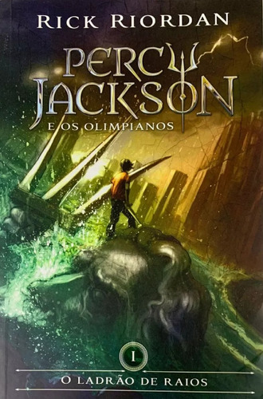

Sumário:
- Harry Potter e a Pedra Filosofal.
- O Senhor dos Anéis: a Sociedades do Anel.
- Percy Jackson e o Ladrão de Raios.
- Alice no País das Maravilhas.
- O Guia do Mochileiro da Galáxias.
Harry Potter e a Pedra Filosofal

Sinopse
Harry Potter nunca tinha ouvido falar em Hogwarts até o momento em que as CARTAS começam a aparecer no capacho do número 4 da rua dos Alfeneiros. Endereçadas com um LACRE PÚRPURA, elas são repidamente confiscadas por seus tios TERRÍVEIS. E então, no décimo primeiro aniversário de Harry, um homem GIGANTESCO com olhos luzindo como besouros negros chamado RÚBEO HAGRID entra intempestivamente com uma notícia ASSOMBROSA:
Harry Potter é um bruxo e tem uma vaga na ESCOLA DE MAGIA E BRUXARIA DE HOGWARTS. Uma aventura inacreditável está para começar!
| Data da primeira publicação | Autor | Idioma | Gênero |
|---|---|---|---|
| 26 de junho de 1997. | J.K Rowling | Inglês | Romance, Literatura infantil, literatura fantastica, alta fantasia |
O Senhor dos Anéis: A Sociedade do Anel

Sinopse
Em uma terra fantástica e única, um hobbit recebe de presente de seu tio um anel mágico e maligno que precisa ser destruído antes que caia nas mãos do mal. Para isso, o hobbit Frodo tem um caminho árduo pela frente, onde encontra perigo, medo e seres bizarros. Ao seu lado para o cumprimento desta jornada, ele aos poucos pode contar com outros hobbits, um elfo, um anão, dois humanos e um mago, totalizando nove seres que formam a Sociedade do Anel.
| Data da primeira publicação | Autor | Idioma | Gênero |
|---|---|---|---|
| Julho de 1954. | John Ronald Reuel Tolkien | Inglês | Ficção, Fantasia |
Percy Jackson e o Ladrão de Raios
Sinopse
O autor conjuga lendas da mitologia grega com aventuras no século XXI. Nelas, os deuses do Olimpo continuam vivos, ainda se apaixonam por mortais e geram filhos metade deuses, metade humanos, como os heróis da Grécia antiga. Marcados pelo destino, eles dificilmente passam da adolescência. Poucos conseguem descobrir sua identidade. O garoto-problema Percy Jackson é um deles. Tem experiências estranhas em que deuses e monstros mitológicos parecem saltar das páginas dos livros direto para a sua vida. Pior que isso: algumas dessas criaturas estão bastante irritadas. Um artefato precioso foi roubado do Monte Olimpo e Percy é o principal suspeito. Para restaurar a paz, ele e seus amigos – jovens heróis modernos – terão de fazer mais do que capturar o verdadeiro ladrão: precisam elucidar uma traição mais ameaçadora que fúria dos deuses.
| Data da primeira publicação | Autor | Idioma | Gênero |
|---|---|---|---|
| 28 de Junho de 2005. | Rick Riordan | Inglês | Mitologia grega, Romance, Ficção juvenil, Literatura fantástica, Alta fantasia. |
Alice no País das Maravilhas

Sinopse
O livro conta a história de Alice, uma menina curiosa que segue um Coelho Branco de colete e relógio, mergulhando sem pensar na sua toca. A protagonista é projetada para um novo mundo, repleto de animais e objetos antropomórficos, que falam e se comportam como seres humanos. No País das Maravilhas, Alice se transforma, vive aventuras e é confrontada com o absurdo, o impossível, questionando tudo o que aprendeu até ali.A menina acaba fazendo parte de um julgamento sem sentido e sendo condenada à morte pela Rainha de Copas, tirana que mandava cortar a cabeça de todos que a incomodavam. Quando é atacada pelos soldados da Rainha, Alice acorda, descobrindo que toda a viagem se tratou de um sonho.
| Data da primeira publicação | Autor | Idioma | Gênero |
|---|---|---|---|
| novembro de 1865. | Lewis Carroll | Inglês | Literatura infantil, Literatura fantástica, Ficção Absurdista, Fantástico. |
O Guia do Mochileiro da Galáxias

Sinopse
A dupla escapa da destruição da Terra pegando carona numa nave alienígena, graças aos conhecimentos de Prefect, um E.T. que vivia disfarçado de ator desempregado enquanto fazia pesquisa de campo para a nova edição do Guia do Mochileiro das Galáxias, o melhor guia de viagens interplanetário.
| Data da primeira publicação | Autor | Idioma | Gênero |
|---|---|---|---|
| 12 de outubro de 1979. | Douglas Adams | Inglês | Ficção científica, Romance, Humor, Ficção científica cômica, Ficção humorística. |